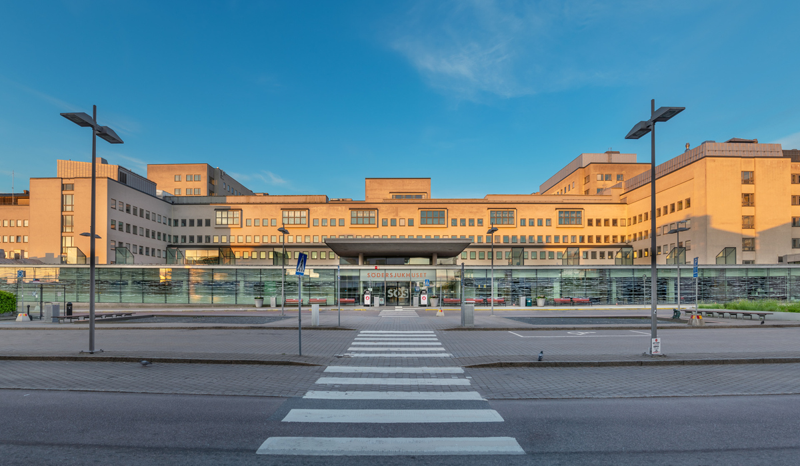

Professional Experience at Södersjukhuset
At Södersjukhuset, I have supported medical technology used across intensive care, operating rooms and diagnostic departments. I worked full-time from January 2018 through December 2021, followed by hourly and consulting assignments from 2022 onward.
My work combines preventive and corrective maintenance, calibration, functional verification, technical fault investigation and service documentation. I also support healthcare personnel and participate in equipment-safety and incident follow-up, with patient safety and traceability guiding every intervention.

Areas of Experience
My Responsibilities
- Performed preventive and corrective maintenance of medical equipment.
- Calibrated and verified equipment according to technical and safety requirements.
- Investigated technical faults and supported the restoration of equipment to safe operation.
- Maintained service records and technical documentation.
- Supported healthcare personnel with equipment use and technical questions.
- Participated in incident reporting and equipment-safety follow-up.
Preventive-Maintenance Improvement
One area of my work involved reviewing and improving preventive maintenance procedures for mobile C-arm systems. The objective was to make technical inspections more structured, repeatable and aligned with safe clinical operation.
This work strengthened my experience in combining manufacturer requirements, technical measurements, service documentation and practical hospital workflows.
Engineering Skills Demonstrated
- Clinical Engineering
- Medical Equipment
- Preventive Maintenance
- Calibration
- Troubleshooting
- Technical Documentation
- Equipment Safety
- Risk Awareness
- Staff Support
- Incident Follow-Up